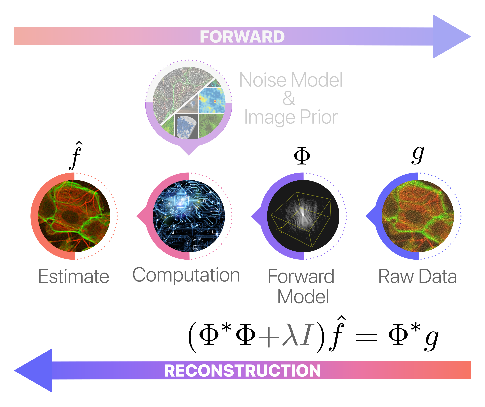

Hands-on Example: Computerised Tomography with Pyxu#
Welcome to this tutorial where we aim to introduce you to the fundamentals of Pyxu through the concrete example of tomographic reconstruction. In this tutorial, we will cover a range of essential concepts and techniques, starting from the basics of defining the forward model, moving on to traditional methods of image reconstruction, and then delving into advanced strategies like model-based regularization techniques and plug-and-play priors.
Let’s get started!
Tomographic Reconstruction in a Nutshell#
Tomographic reconstruction is a computational process used in imaging sciences to reconstruct 2D or 3D images from a series of projections captured at different angles. The term “tomography” stems from the Greek words “tomo,” meaning “slice” or “section,” and “graph,” meaning “to write” or “to record.” In essence, tomography aims to construct a representation of an object by investigating its internal structure slice-by-slice. This method has wide-ranging applications, from medical imaging like CT scans to industrial quality control, seismology, material science, and astronomy. For a deeper understanding, various resources on the mathematical and computational aspects are available.
The fundamental principle behind tomographic reconstruction is the Radon transform, maps a function in 2D or 3D space to a set of line integrals. In the context of medical imaging, for example, these line integrals represent the attenuation of X-rays as they pass through a human body. By capturing these attenuations from various angles, it is possible to reconstruct a cross-sectional image of the internal structure.
The process typically involves the following steps:
Data Acquisition: Projection data is gathered from different angles, typically by rotating the X-ray source and detector around the object being imaged.
Back-Projection: The acquired projection data is then ‘smeared’ back across the imaging field for each angle.
Reconstruction: Various algorithms, such as Filtered Back-Projection (FBP) or iterative methods, are used to compute the original image from the smeared data.

A Non-Ideal Parrallel-beam Tomographic Setup#
In this tutorial, we explore the challenges of working with a non-idealized parallel-beam tomographic setup that deviates from the assumptions usually made by traditional Radon transform models. The complexities of our setup include:
Detector Width: Detectors feature non-negligible widths, causing ‘tube integrals’ instead of the ‘line integrals’ traditionally assumed by the Radon transform. This results in a column-wise ‘smearing’ effect in the so-called sinogram —a data representation that stacks horizontally 1D projections of an object at various angles.
X-ray Beam Intensity: The X-ray beam’s intensity tapers towards the edges, causing a similar ‘tapering’ effect in the sinogram columns, which complicates the application of the standard Radon transform.
Probabilistic Element: There’s a chance that detector pixels might turn off during each rotation, introducing ‘missing values’ in the sinogram.
The figure below juxtaposes two types of sinograms for a specific test object, known as a phantom: one represents the idealized sinogram that Radon-based reconstruction algorithms typically assume, and the other illustrates the non-idealized sinogram as captured by the instrument.
[2]:
seed = 0
# Generate phantom with xdesign
np.random.seed(seed)
p1 = xd.Foam(size_range=[0.1, 0.01], gap=0.025, porosity=0.5)
phantom = xd.discrete_phantom(p1, 160) * 10
phantom = np.abs(np.pad(phantom, 20))
# Generate theoretical and empirical sinogram
rng = np.random.default_rng(seed)
psnr = 20
angles, wsize = 90, 5
ideal_sino = ski.transform.radon(phantom, theta=np.linspace(0, 180, angles), circle=True)
sino = sp.ndimage.uniform_filter(ideal_sino, [wsize, 0], mode='constant')
mask = rng.binomial(1, 0.95, sino.shape)
sino *= mask
sino *= sp.signal.get_window('hamming', sino.shape[0])[:, None]
sigma = np.abs(sino).max() * (10**(-psnr/10))
sino += rng.normal(scale=sigma, size=sino.shape)
# Plot phantom and sinograms
_ = plt.subplot(1,3,1)
_ = plt.imshow(phantom)
_ = plt.title("Phantom")
_ = plt.axis('off')
_ = plt.subplot(1,3,2)
_ = plt.imshow(ideal_sino, aspect=0.45)
_ = plt.title("Ideal Sinogram")
_ = plt.axis('off')
_ = plt.subplot(1,3,3)
_ = plt.imshow(sino, aspect=0.45)
_ = plt.title("Measured Sinogram")
_ = plt.axis('off')
Naive Application of Filtered-Back Projection#
In this section, we explore what happens when we naively apply the iradon function from the scikit-image library, which implements the Filtered Back Projection (FBP) algorithm, without accounting for the non-idealities inherent to our tomographic setup. Despite the algorithm’s effectiveness in idealized scenarios, we observe that our reconstructed image is riddled with severe artifacts.
We attempt to mitigate these artifacts by filling in the gaps in the sinogram through matched filtering. However, as can be seen below, this approach proves insufficient for handling the complex distortions caused by the non-ideal conditions in our setup. This section serves as a poignant illustration of the limitations of using off-the-shelf Radon transform methods in scenarios that deviate from their underlying assumptions.
[3]:
fbp_ideal = ski.transform.iradon(radon_image=ideal_sino, filter_name="hamming")
fbp_measured = ski.transform.iradon(radon_image=sino, filter_name="hamming")
sino_fillin = sp.ndimage.uniform_filter(sino, [wsize, 0], mode='constant')
fbp_fillin = ski.transform.iradon(radon_image=sino_fillin, filter_name="hamming")
_ = plt.subplot(2,3,1)
_ = plt.imshow(phantom)
_ = plt.title('Phantom')
_ = plt.axis('off')
_ = plt.subplot(2,3,2)
_ = plt.imshow(fbp_ideal)
_ = plt.title('FBP (Ideal Sinogram)')
_ = plt.axis('off')
_ = plt.subplot(2,3,3)
_ = plt.imshow(fbp_measured)
_ = plt.title('FBP (Measured Sinogram)')
_ = plt.axis('off')
_ = plt.subplot(2,3,6)
_ = plt.imshow(fbp_fillin)
_ = plt.title('FBP (Filled-in Measured Sinogram)')
_ = plt.axis('off')
Pyxu’s Modularity to the Rescue#
We now turn our attention to how Pyxu addresses the limitations encountered when using iradon for reconstruction in non-ideal conditions. Unlike monolithic approaches, Pyxu’s microservice architecture thrives on modularity, allowing us to decompose the data model into a sequence of simple linear operators: the Radon transform (\(R\)), followed by filtering (\(F\)), masking (\(M\)), and finally tapering (\(T\)).
Here is a code snippet detailing the construction of such an operator with Pyxu:
[4]:
import pyxu.abc as pxa
import pyxu.operator as pxo
from pyxu.operator.interop import from_source
import skimage.transform as skt
# Radon Operator
Radon = from_source(cls=pxa.LinOp,
shape=(sino.size, phantom.size),
apply=lambda self, arr: skt.radon(arr.reshape(phantom.shape),
theta=np.linspace(0, 180, angles),
circle=True).ravel(),
adjoint=lambda self, arr: skt.iradon(arr.reshape(sino.shape),
filter_name=None,
circle=True).ravel(),
vectorize=["apply", "adjoint"], vmethod="scan", enforce_precision=["apply", "adjoint"])
# 1D Filtering
boxcar = np.asarray(sp.signal.get_window("boxcar", wsize)); boxcar /= wsize
BoxCar1D = pxo.Stencil(kernel=[boxcar, np.array([1.0])], center=(wsize // 2, 0), arg_shape=sino.shape,)
# Partial Masking
Mask = pxo.DiagonalOp(mask.ravel())
# Tapering
taper = np.outer(sp.signal.get_window("hamming", sino.shape[0]), np.ones(sino.shape[1]))
Taper = pxo.DiagonalOp(taper.ravel())
# Compose operators
Phi = Taper * Mask * BoxCar1D * Radon
OMP: Info #276: omp_set_nested routine deprecated, please use omp_set_max_active_levels instead.
Note that the apply and adjoint methods of the composite operator \(\Phi\) are automatically inferred by Pyxu, leveraging standard composition rules.
In Pyxu, one of the powerful features is the ability to define matrix-free linear operators, a crucial advantage for large-scale imaging problems. In layman’s terms, you define an operator by just coding its apply and adjoint methods. This bypasses the need for storing the operator as a cumbersome matrix, which not only saves memory but also boosts computational speed.
In the example above, we have for example used the radon and iradon functions from scikit-image to define the apply and adjoint methods of our Radon operator. This exemplifies Pyxu’s core philosophy: You don’t have to reinvent the wheel. Feel free to incorporate useful components from other libraries. Pyxu is designed to stitch these disparate elements together into a seamless, modular workflow.
Internally, Pyxu maintains a detailed record of the composition chains and arithmetic operations that define each operator. This comprehensive tracking is made accessible through the operator’s expr() method, which can reveal the intricate web of calculations and transformations that the operator encompasses.
[5]:
print(Phi.expr())
[compose, ==> LinOp(18000, 40000)
.[compose, ==> SquareOp(18000, 18000)
..[compose, ==> SquareOp(18000, 18000)
...DiagonalOp(18000, 18000),
...DiagonalOp(18000, 18000)],
..Stencil(18000, 18000)],
.LinOp(18000, 40000)]
We can now assess the effectiveness of our composite operator, \(\Phi\), in replicating the real-world acquisition setup. By juxtaposing the sinogram predicted by \(\Phi\) with the one actually measured, we find that the two are nearly indistinguishable, aside from minor noise variations. This close resemblance provides strong validation for the accuracy of our custom tomographic system model.
[6]:
predicted_sino = Phi(phantom.ravel()).reshape(sino.shape)
[7]:
_ = plt.subplot(1,3,1)
_ = plt.imshow(sino, aspect=0.45)
_ = plt.title("Measured Sinogram")
_ = plt.axis('off')
_ = plt.subplot(1,3,2)
_ = plt.imshow(predicted_sino, aspect=0.45)
_ = plt.title("Predicted Sinogram")
_ = plt.axis('off')
_ = plt.subplot(1,3,3)
_ = plt.imshow(np.abs(sino-predicted_sino), aspect=0.45)
_ = plt.title("Absolute Difference")
_ = plt.axis('off')
The real strength here lies in Pyxu’s ability to efficiently stitch simple generic operators together to create a coherent and robust data model that accommodates the complexities of our specific tomographic setup. This modular design stands in sharp contrast to adapting a one-size-fits-all routine like iradon in scikit-image, which would necessitate an unwieldy and complex API to account for all potential non-idealities encountered in practice.
By utilizing Pyxu’s flexible architecture, we can effortlessly extend or modify each microservice to suit our needs, making it a practical and maintainable solution for handling the intricate challenges of non-ideal image reconstruction setups.
Image Reconstruction with Pyxu#
Pseudoinverse Solution#
Now that we’ve accurately modeled our acquisition system using the composite operator \(\Phi\), we can proceed to the reconstruction phase. Traditional methods like filtered backprojection are no longer applicable here, due to the complexities introduced in our custom setup. Consequently, we must resort to generic solvers, such as the conjugate gradient method, to solve the corresponding (dampened) normal equations.

In Pyxu, this task is greatly simplified by the pinv (pseudoinverse) method provided by LinOp instances. The pinv method allows us to implement simple reconstruction techniques without getting lost in the details.
The following code snippet illustrates its application in our tomographic setting. For the sake of this demonstration, we employ a custom stopping criterion (relative error smaller than \(10^{-3}\) and 500 iterations tops) and incorporate a dampening factor of 4 to improve the algorithm’s resilience to noise and numerical instability.
[8]:
import pyxu.opt.stop as pxs
default_stop_crit = pxs.RelError(eps=1e-3, var="x", f=None, norm=2, satisfy_all=True) | pxs.MaxIter(500)
pinv_solution = Phi.pinv(sino.ravel(), damp=4,
kwargs_init=dict(show_progress=False, verbosity=50),
kwargs_fit=dict(stop_crit=default_stop_crit))
INFO:/var/folders/fw/5bd0378d07g0fv04n5j2yn4h0000gp/T/pyxu_vpkir8bb:[2023-08-30 11:48:48.112703] Iteration 0
iteration: 0
RelError[x]: 0.0
N_iter: 1.0
INFO:/var/folders/fw/5bd0378d07g0fv04n5j2yn4h0000gp/T/pyxu_vpkir8bb:[2023-08-30 11:48:50.957874] Iteration 18
iteration: 18
RelError[x]: 0.0008930069037400604
N_iter: 19.0
INFO:/var/folders/fw/5bd0378d07g0fv04n5j2yn4h0000gp/T/pyxu_vpkir8bb:[2023-08-30 11:48:50.958632] Stopping Criterion satisfied -> END
[9]:
_ = plt.subplot(1,3,1)
_ = plt.imshow(phantom)
_ = plt.title('Phantom')
_ = plt.axis('off')
_ = plt.subplot(1,3,2)
_ = plt.imshow(fbp_fillin)
_ = plt.title('Filtered Back Projection')
_ = plt.axis('off')
_ = plt.subplot(1,3,3)
_ = plt.imshow(pinv_solution.reshape(phantom.shape))
_ = plt.title('Pseudoinverse Solution')
_ = plt.axis('off')
The results are truly impressive! In a little more than a second of (laptop) computing time and with only minimal coding, we’ve substantially improved various facets of image quality, including resolution, contrast, and artifact removal.
The secret to this success lies in Pyxu’s modular architecture. It enabled us to efficiently address the specific complexities of our custom tomographic system, allowing for high-quality, reliable image reconstructions —even when using straightforward algorithms like the conjugate gradient method.
Bayesian Inversion#
In this section, we explore a more advanced approach to image reconstruction using Bayesian models. These models offer a rigorous yet adaptable framework to manage uncertainties and to incorporate prior information. In the Bayesian context, the ‘likelihood’ quantifies how well our model explains the observed data, while the ‘prior’ encodes pre-existing beliefs or assumptions about the solution.

Specifically, we employ a Bayesian model with a least-squares log-likelihood, and couple it with a composite prior that includes terms for total variation, sparsity, and positivity. The corresponding (negative) log-posterior distribution is given by:
In this equation, the total variation term \(\lambda\|\nabla f\|_1\) aims to produce solutions that feature minimal abrupt changes between adjacent pixels, which helps in preserving edges and reducing noise. The sparsity term \(\mu \|f\|_1\) encourages solutions that are primarily zero or close to zero, thereby focusing on the essential features in the image. Lastly, the positivity constraint \(f\geq 0\) assures that the reconstructed image is physically meaningful, which is especially critical in areas like medical imaging where negative values would not be interpretable.
Unlike pseudoinverse methods, Bayesian inversion does not produce a single estimate but instead yields an ensemble of possible solutions, each with varying degrees of credibility as characterized by the posterior distribution. One can then either sample from this distribution or summarize it through its moments or modes. The mode of the posterior, known as Maximum A Posteriori (MAP) estimation, provides the most credible image given the observed data, data model, and prior. In our particular setup, the MAP estimate is defined as:
In Pyxu, the MAP can be obtained as follows (note that, for simplicity, we smooth the TV term):
[10]:
from pyxu.operator import Gradient, SquaredL2Norm, L1Norm, PositiveOrthant, PositiveL1Norm
# TV prior
grad = Gradient(arg_shape=phantom.shape, accuracy=4, mode='constant', diff_method='fd')
lambda_= 0.05 / (2 * sigma**2)
huber_norm = L1Norm(grad.shape[0]).moreau_envelope(0.01) #We smooth the L1 norm to facilitate optimisation
tv_prior = lambda_ * huber_norm * grad
# Positivity + L1 norm
posL1 = 0.05 * PositiveL1Norm(phantom.size)
# Loss
loss = (1/ (2 * sigma**2)) * SquaredL2Norm(dim=sino.size).asloss(sino.ravel()) * Phi
# Smooth part of the posterior
smooth_posterior = loss + tv_prior
smooth_posterior.diff_lipschitz = smooth_posterior.estimate_diff_lipschitz(method="svd", tol=0.1)
The code can be broken down as follows:
Defining the Total Variation (TV) Prior
# TV prior
grad = Gradient(arg_shape=phantom.shape, accuracy=4, mode='constant', diff_method='fd')
lambda_= 0.05 / (2 * sigma**2)
huber_norm = L1Norm(grad.shape[0]).moreau_envelope(0.01)
tv_prior = lambda_ * huber_norm * grad
Gradient: Computes the gradient of an image. The argumentarg_shape=phantom.shapespecifies the shape of the image, i.e.,phantom.shape.lambda_: Scales the total variation term. It is calculated based on the noise level,sigma, in the observations.moreau_envelope(0.01): Applies the Moreau envelope to smooth the L1 norm of the TV term, facilitating the downstream MAP estimation process.
Defining the Positivity and L1 Norm Constraints
# Positivity + L1 norm
posL1 = 0.05 * PositiveL1Norm(phantom.size)
PositiveL1Norm: This operator combines a sparsity-promoting \(L_1\) norm and a positivity constraint.
Defining the Data Likelihood (Loss)
# Loss
loss = (1/ (2 * sigma**2)) * SquaredL2Norm(dim=sino.size).asloss(sino.ravel()) * Phi
SquaredL2Norm: Represents the squared L2 norm of the residual between the observed and modeled data, scaled by the noise level,sigma..asloss(sino.ravel()): Sets the observed sinogram as the data.* Phi: Compose the \(L_2\) norm with \(\Phi\), the operator modeling the acquisition process.
Defining the Smooth Part of the Posterior
# Posterior
smooth_posterior = loss + tv_prior
beta = smooth_posterior.estimate_diff_lipschitz(method="svd", tol=0.1)
smooth_posterior: The smooth part of the posterior that combines both the likelihood (loss) and the smoothedtv_prior. Will be useful later on.The method
estimate_diff_lipschitzallows to compute the Lipschitz constant of the gradient of the differentiable part of the posterior, that will be used later on to optimally set the step size of the gradient-descent based optimizer. This step can be time consuming for large scale problems.
We are now ready to solve the MAP estimation problem. We do that via proximal gradient descent, a generic solver for problems of the form
where \(\mathcal{F}\) is convex and smooth and \(\mathcal{G}\) is nonsmooth but admits a simple proximity operator. For our particular setup, we choose \(F(f)=\frac{1}{2\sigma^2}\|g - \Phi(f)\|_2^2 + \lambda\|\nabla f\|_{H}\) and \(G(f)= \mu \|f\|_1 + \iota(f\geq 0)\), (with \(\lambda\|\nabla f\|_{H}\) denoting the smoothed TV prior).
In Pyxu, this is achieved as follows (note that we do not set the solver’s step size, this is automatically computed by Pyxu):
[11]:
from pyxu.opt.solver import PGD
# Define the solver
solver = PGD(f=smooth_posterior, g=posL1, show_progress=False, verbosity=250)
# Call fit to trigger the solver
solver.fit(x0=0*pinv_solution.ravel(), acceleration=True, stop_crit=default_stop_crit)
recon_tv = solver.solution().squeeze()
INFO:/var/folders/fw/5bd0378d07g0fv04n5j2yn4h0000gp/T/pyxu_rq1ik2ts:[2023-08-30 11:49:03.537342] Iteration 0
iteration: 0
RelError[x]: 0.0
N_iter: 1.0
INFO:/var/folders/fw/5bd0378d07g0fv04n5j2yn4h0000gp/T/pyxu_rq1ik2ts:[2023-08-30 11:49:53.193390] Iteration 250
iteration: 250
RelError[x]: 0.0015169258712506004
N_iter: 251.0
INFO:/var/folders/fw/5bd0378d07g0fv04n5j2yn4h0000gp/T/pyxu_rq1ik2ts:[2023-08-30 11:50:07.447481] Iteration 320
iteration: 320
RelError[x]: 0.0009967474953850271
N_iter: 321.0
INFO:/var/folders/fw/5bd0378d07g0fv04n5j2yn4h0000gp/T/pyxu_rq1ik2ts:[2023-08-30 11:50:07.448335] Stopping Criterion satisfied -> END
[12]:
_ = plt.subplot(1,3,1)
_ = plt.imshow(fbp_fillin)
_ = plt.title('Filtered Back Projection')
_ = plt.axis('off')
_ = plt.subplot(1,3,2)
_ = plt.imshow(pinv_solution.reshape(phantom.shape))
_ = plt.title('Pseudoinverse Solution')
_ = plt.axis('off')
_ = plt.subplot(1,3,3)
_ = plt.imshow(recon_tv.reshape(phantom.shape))
_ = plt.title('MAP Solution (TV+)')
_ = plt.axis('off')
Again, the benefits in terms of accuracy when compared to both the pseudoinverse and the naive iradon reconstruction routine are substantial. However, it’s important to note that this enhanced accuracy was not achieved without some additional effort. Setting up the Bayesian inversion model demands a more intricate configuration compared to simpler methods. Thankfully, the Pyxu library significantly simplifies this process by providing a streamlined framework, thereby alleviating most of the
associated complexities.
Furthermore, Pyxu offers built-in routines for fine-tuning the hyperparameters of Bayesian models —specifically the regularization parameters \(\lambda\) and \(\mu\) in our case— which can further enhance the performance of the reconstruction. Finally, for those interested in a more nuanced understanding of the solution space, Pyxu includes Markov Chain Monte Carlo (MCMC) samplers. These allow for sampling from the posterior distribution and enable the calculation of various statistical moments, providing a more comprehensive characterization of the solution.
Plug-and-Play Reconstruction Schemes#
We conclude this tutorial with a simple Plug-and-Play (PnP) reconstruction scheme. The latter offer a modern, versatile approach to image reconstruction that seamlessly combines data fidelity and prior knowledge. These schemes alternate between gradient steps, which aim to keep the solution consistent with observed data, and denoising steps, which introduce prior information to regularize the solution.
PnP Priors: Implicit and Intuitive#
One of the unique characteristics of PnP schemes is the use of implicit priors. Instead of using an explicitly defined mathematical function to model the prior, a denoising algorithm is used. This innovative step replaces the proximity operator commonly used in classical optimization with a denoiser, thereby expanding the range of prior models that can be incorporated into the reconstruction process. This implicitness allows for great flexibility and can accommodate more complex structures in the data, which might not be easily expressible in mathematical terms.
The key intuition behind PnP is simple yet powerful: if a denoising algorithm can effectively remove noise from an image, then it likely encapsulates some underlying “truth” or “structure” of the image, which can serve as a good prior. Essentially, the denoising algorithm embodies our prior beliefs about what the solution should look like.
In real-world applications, a variety of denoising algorithms have found their way into PnP frameworks, each offering its own set of advantages and limitations. Here are some commonly used denoisers that can act as implicit priors in PnP schemes:
BM3D (Block-Matching and 3D Filtering): A highly effective denoiser, popular in medical imaging. It collaboratively filters 3D data blocks.
Non-Local Means: Averages similar pixels from the entire image, effectively preserving textures.
Wavelet-based Denoising: Uses wavelet transforms for multi-resolution analysis, isolating and removing noise.
Deep Learning-based Denoisers: Algorithms like DnCNN adapt to various noise types and often outperform traditional methods.
Total Variation Denoising: Minimizes the total variation of the image, effectively removing noise while keeping edges sharp.
Basic Equations#
PnP methods are typically found in two forms: proximal or differentiable.
In its proximal form, a typical PnP algorithm can be represented by:
where \(\nabla F(x)\) is the gradient term ensuring data fidelity.
In differential form, influenced by the regularization by denoising (RED) framework, the equation can be expressed as:
where \(\lambda\) encodes the PnP prior strength.
NOTE: Tweedie’s formula tells us that when \(\text{Denoiser}_{\sigma}\) is an MMSE Gaussian denoiser, we should choose \(\lambda = 1/\sigma\) (where \(\sigma\) is the noise level). The term \(\frac{1}{\sigma}(f^k- \text{Denoiser}_{\sigma}(f^k))\) can then be understood as the approximate score (gradient) of the distribution of natural images convolved with a Gaussian with standard deviation \(\sigma\).
By understanding and applying these principles, one can utilize PnP schemes to achieve high-quality image reconstructions that are both data-consistent and regularized, all while benefiting from the computational and modeling advantages that come with implicit priors.
In Pyxu, implicit PnP priors can be implemented in both forms via the ProxDiffFunc base class. Here is a simple example with a median filter denoiser.
[13]:
from scipy.ndimage import median_filter
def denoiser(arr, arg_shape, wsize):
arr = arr.reshape(arg_shape)
return median_filter(arr, size=wsize).ravel()
class MedianFilterPnP(pxa.ProxDiffFunc):
def __init__(self, arg_shape, wsize):
super().__init__((1,np.prod(arg_shape)))
self._arg_shape = arg_shape
self.wsize= wsize
self.diff_lipschitz = 1
def apply(self, arr):
return NotImplemented # PnP priors are implicit, they do not have an apply method!
def grad(self, arr):
return arr - denoiser(arr, self._arg_shape, self.wsize) # Differential form
def prox(self, arr, tau=None): # Parameter tau is not used since this is not a proper proximal operator.
return denoiser(arr, self._arg_shape, self.wsize) # Proximal form
Note that this is a simplified implementation for example purposes (an actual implmentation would need to abide by Pyxu’s API rules, namely support for batch dimensions, module-agnosticity and precision control).
We can now initialize the PnP prior:
[14]:
medpnp = MedianFilterPnP(phantom.shape, (3,3))
For the data consistency term, we simply use the least-squares loss from before. To allow for PGD to tune its gradient step automatically, we need to compute the Lipschtiz constant of the derivative of the loss:
[15]:
loss.diff_lipschitz = loss.estimate_diff_lipschitz(method="svd", tol=0.1)
To use the PnP prior in proximal form, we feed it to the nonsmooth proximal term g of PGD:
[16]:
# Define the solver
solver = PGD(f=loss, g=medpnp, show_progress=False, verbosity=75)
# Call fit to trigger the solver
solver.fit(x0=pinv_solution.ravel(), acceleration=True, stop_crit=pxs.MaxIter(250))
recon_pnp_prox = solver.solution().squeeze()
INFO:/var/folders/fw/5bd0378d07g0fv04n5j2yn4h0000gp/T/pyxu_8ci5ecdk:[2023-08-30 11:50:15.146888] Iteration 0
iteration: 0
N_iter: 1.0
INFO:/var/folders/fw/5bd0378d07g0fv04n5j2yn4h0000gp/T/pyxu_8ci5ecdk:[2023-08-30 11:50:29.990715] Iteration 75
iteration: 75
N_iter: 76.0
INFO:/var/folders/fw/5bd0378d07g0fv04n5j2yn4h0000gp/T/pyxu_8ci5ecdk:[2023-08-30 11:50:44.446443] Iteration 150
iteration: 150
N_iter: 151.0
INFO:/var/folders/fw/5bd0378d07g0fv04n5j2yn4h0000gp/T/pyxu_8ci5ecdk:[2023-08-30 11:50:59.156302] Iteration 225
iteration: 225
N_iter: 226.0
INFO:/var/folders/fw/5bd0378d07g0fv04n5j2yn4h0000gp/T/pyxu_8ci5ecdk:[2023-08-30 11:51:04.107030] Iteration 250
iteration: 250
N_iter: 251.0
INFO:/var/folders/fw/5bd0378d07g0fv04n5j2yn4h0000gp/T/pyxu_8ci5ecdk:[2023-08-30 11:51:04.107904] Stopping Criterion satisfied -> END
Note that we changed the stopping criterion to a maximum number of iterations, since the fixed-point convergence of PnP methods is not guaranteed in general.
To use the PnP prior in differential form, we first sum it with the loss and feed the sum to the smooth term f of PGD, leaving the nonsmooth term empty:
[17]:
# Define new composite smooth term (sum of the loss and weighted implicit prior)
composite_smooth = loss + 0.1 * medpnp
# Define the solver
solver = PGD(f=composite_smooth, g=None, show_progress=False, verbosity=75)
# Call fit to trigger the solver
solver.fit(x0=pinv_solution.ravel(), acceleration=True, stop_crit=pxs.MaxIter(250))
recon_pnp_smooth = solver.solution().squeeze()
INFO:/var/folders/fw/5bd0378d07g0fv04n5j2yn4h0000gp/T/pyxu_oxs2siq9:[2023-08-30 11:51:04.125588] Iteration 0
iteration: 0
N_iter: 1.0
INFO:/var/folders/fw/5bd0378d07g0fv04n5j2yn4h0000gp/T/pyxu_oxs2siq9:[2023-08-30 11:51:18.663986] Iteration 75
iteration: 75
N_iter: 76.0
INFO:/var/folders/fw/5bd0378d07g0fv04n5j2yn4h0000gp/T/pyxu_oxs2siq9:[2023-08-30 11:51:33.305413] Iteration 150
iteration: 150
N_iter: 151.0
INFO:/var/folders/fw/5bd0378d07g0fv04n5j2yn4h0000gp/T/pyxu_oxs2siq9:[2023-08-30 11:51:47.935114] Iteration 225
iteration: 225
N_iter: 226.0
INFO:/var/folders/fw/5bd0378d07g0fv04n5j2yn4h0000gp/T/pyxu_oxs2siq9:[2023-08-30 11:51:52.845086] Iteration 250
iteration: 250
N_iter: 251.0
INFO:/var/folders/fw/5bd0378d07g0fv04n5j2yn4h0000gp/T/pyxu_oxs2siq9:[2023-08-30 11:51:52.845932] Stopping Criterion satisfied -> END
The results are given below:
[18]:
_ = plt.subplot(2,3,1)
_ = plt.imshow(pinv_solution.reshape(phantom.shape))
_ = plt.title('Pseudoinverse Solution')
_ = plt.axis('off')
_ = plt.subplot(2,3,2)
_ = plt.imshow(recon_tv.reshape(phantom.shape))
_ = plt.title('MAP Solution (TV+)')
_ = plt.axis('off')
_ = plt.subplot(2,3,3)
_ = plt.imshow(recon_pnp_prox.reshape(phantom.shape))
_ = plt.title('PnP (Prox)')
_ = plt.axis('off')
_ = plt.subplot(2,3,6)
_ = plt.imshow(recon_pnp_smooth.reshape(phantom.shape))
_ = plt.title('PnP (Diff)')
_ = plt.axis('off')
Not bad! Despite using a very simple PnP prior, we managed to significantly improve the reconstruction quality w.r.t. the pseudoinverse solution. With respect to the MAP solution, we observe a slight improvement in terms of sharpness and contrast. There is however, not much difference between the PnP priors in differential or proximal form.
Note however that PnP priors are harder to fine-tune than Bayesian methods. In particular, the size of the median filter used above is arbitrary, and changing it can significantly change the estimate:
[19]:
medpnp = MedianFilterPnP(phantom.shape, (5,5))
[20]:
# Define the solver
solver = PGD(f=loss, g=medpnp, show_progress=False, verbosity=75)
# Call fit to trigger the solver
solver.fit(x0=pinv_solution.ravel(), acceleration=True, stop_crit=pxs.MaxIter(250))
recon_pnp_prox = solver.solution().squeeze()
INFO:/var/folders/fw/5bd0378d07g0fv04n5j2yn4h0000gp/T/pyxu_53dzljep:[2023-08-30 11:51:53.704943] Iteration 0
iteration: 0
N_iter: 1.0
INFO:/var/folders/fw/5bd0378d07g0fv04n5j2yn4h0000gp/T/pyxu_53dzljep:[2023-08-30 11:52:08.973799] Iteration 75
iteration: 75
N_iter: 76.0
INFO:/var/folders/fw/5bd0378d07g0fv04n5j2yn4h0000gp/T/pyxu_53dzljep:[2023-08-30 11:52:24.115688] Iteration 150
iteration: 150
N_iter: 151.0
INFO:/var/folders/fw/5bd0378d07g0fv04n5j2yn4h0000gp/T/pyxu_53dzljep:[2023-08-30 11:52:39.404117] Iteration 225
iteration: 225
N_iter: 226.0
INFO:/var/folders/fw/5bd0378d07g0fv04n5j2yn4h0000gp/T/pyxu_53dzljep:[2023-08-30 11:52:44.850609] Iteration 250
iteration: 250
N_iter: 251.0
INFO:/var/folders/fw/5bd0378d07g0fv04n5j2yn4h0000gp/T/pyxu_53dzljep:[2023-08-30 11:52:44.851527] Stopping Criterion satisfied -> END
[21]:
_ = plt.subplot(1,3,1)
_ = plt.imshow(pinv_solution.reshape(phantom.shape))
_ = plt.title('Pseudoinverse Solution')
_ = plt.axis('off')
_ = plt.subplot(1,3,2)
_ = plt.imshow(recon_tv.reshape(phantom.shape))
_ = plt.title('MAP Solution (TV+)')
_ = plt.axis('off')
_ = plt.subplot(1,3,3)
_ = plt.imshow(recon_pnp_prox.reshape(phantom.shape))
_ = plt.title('PnP (Prox)')
_ = plt.axis('off')
The resulting image looks “sketchy” and extremely quantized. Lots of details are lost w.r.t the MAP solution (only the big dark circle subsist).